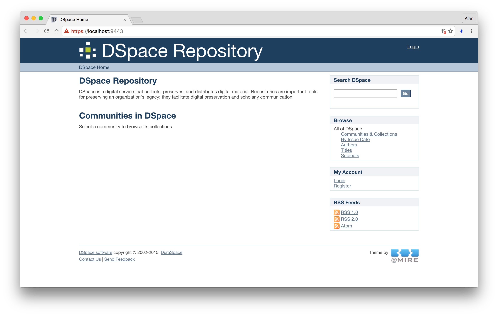
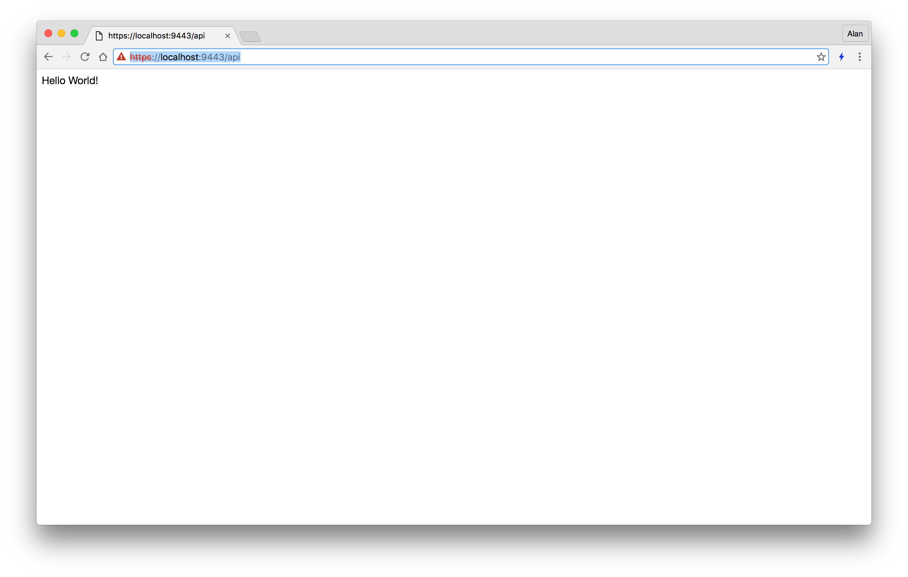

August, 2016
2016-08-01
- Add updated distribution license from Sisay (#259)
- Play with upgrading Mirage 2 dependencies in
bower.jsonbecause most are several versions of out date - Bootstrap is at 3.3.0 but upstream is at 3.3.7, and upgrading to anything beyond 3.3.1 breaks glyphicons and probably more
- bower stuff is a dead end, waste of time, too many issues
- Anything after Bootstrap 3.3.1 makes glyphicons disappear (HTTP 404 trying to access from incorrect path of
fonts) - Start working on DSpace 5.1 → 5.5 port:
$ git checkout -b 55new 5_x-prod
$ git reset --hard ilri/5_x-prod
$ git rebase -i dspace-5.5
- Lots of conflicts that don’t make sense (ie, shouldn’t conflict!)
- This file in particular conflicts almost 10 times:
dspace/modules/xmlui-mirage2/src/main/webapp/themes/CGIAR/styles/_style.scss - Checking out a clean branch at 5.5 and cherry-picking our commits works where that file would normally have a conflict
- Seems to be related to merge commits
git rebase --preserve-mergesdoesn’t seem to help- Eventually I just turned on git rerere and solved the conflicts and completed the 403 commit rebase
- The 5.5 code now builds but doesn’t run (white page in Tomcat)
2016-08-02
- Ask Atmire for help with DSpace 5.5 issue
- Vanilla DSpace 5.5 deploys and runs fine
- Playing with DSpace in Ubuntu 16.04 and Tomcat 7
- Everything is still fucked up, even vanilla DSpace 5.5
2016-08-04
- Ask on DSpace mailing list about duplicate authors, Discovery and author text values
- Atmire responded with some new DSpace 5.5 ready versions to try for their modules
2016-08-05
- Fix item display incorrectly displaying Species when Breeds were present (#260)
- Experiment with fixing more authors, like Delia Grace:
dspacetest=# update metadatavalue set authority='0b4fcbc1-d930-4319-9b4d-ea1553cca70b', confidence=600 where metadata_field_id=3 and text_value='Grace, D.';
2016-08-06
- Finally figured out how to remove “View/Open” and “Bitstreams” from the item view
2016-08-07
- Start working on Ubuntu 16.04 Ansible playbook for Tomcat 8, PostgreSQL 9.5, Oracle 8, etc
2016-08-08
- Still troubleshooting Atmire modules on DSpace 5.5
- Vanilla DSpace 5.5 works on Tomcat 7…
- Ooh, and vanilla DSpace 5.5 works on Tomcat 8 with Java 8!
- Some notes about setting up Tomcat 8, since it’s new on this machine…
- Install latest Oracle Java 8 JDK
- Create
setenv.shin Tomcat 8libexec/bindirectory:
CATALINA_OPTS="-Djava.awt.headless=true -Xms3072m -Xmx3072m -XX:+UseConcMarkSweepGC -XX:+CMSIncrementalMode -Dfile.encoding=UTF-8"
CATALINA_OPTS="$CATALINA_OPTS -Djava.library.path=/opt/brew/Cellar/tomcat-native/1.2.8/lib"
JRE_HOME=/Library/Java/JavaVirtualMachines/jdk1.8.0_102.jdk/Contents/Home
- Edit Tomcat 8
server.xmlto add regular HTTP listener for solr - Symlink webapps:
$ rm -rf /opt/brew/Cellar/tomcat/8.5.4/libexec/webapps/ROOT
$ ln -sv ~/dspace/webapps/xmlui /opt/brew/Cellar/tomcat/8.5.4/libexec/webapps/ROOT
$ ln -sv ~/dspace/webapps/oai /opt/brew/Cellar/tomcat/8.5.4/libexec/webapps/oai
$ ln -sv ~/dspace/webapps/jspui /opt/brew/Cellar/tomcat/8.5.4/libexec/webapps/jspui
$ ln -sv ~/dspace/webapps/rest /opt/brew/Cellar/tomcat/8.5.4/libexec/webapps/rest
$ ln -sv ~/dspace/webapps/solr /opt/brew/Cellar/tomcat/8.5.4/libexec/webapps/solr
2016-08-09
- More tests of Atmire’s 5.5 modules on a clean, working instance of
5_x-prod - Still fails, though perhaps differently than before (Flyway): https://gist.github.com/alanorth/5d49c45a16efd7c6bc1e6642e66118b2
- More work on Tomcat 8 and Java 8 stuff for Ansible playbooks
2016-08-10
- Turns out DSpace 5.x isn’t ready for Tomcat 8: https://jira.duraspace.org/browse/DS-3092
- So we’ll need to use Tomcat 7 + Java 8 on Ubuntu 16.04
- More work on the Ansible stuff for this, allowing Tomcat 7 to use Java 8
- Merge pull request for fixing the type Discovery index to use
dc.type(#262) - Merge pull request for removing “Bitstream” text from item display, as it confuses users and isn’t necessary (#263)
2016-08-11
- Finally got DSpace (5.5) running on Ubuntu 16.04, Tomcat 7, Java 8, PostgreSQL 9.5 via the updated Ansible stuff

2016-08-14
- Update Mirage 2 build notes for Ubuntu 16.04: https://gist.github.com/alanorth/2cf9c15834dc68a514262fcb04004cb0
2016-08-15
- Notes on NodeJS + nginx + systemd: https://gist.github.com/alanorth/51acd476891c67dfe27725848cf5ace1

2016-08-16
- Troubleshoot Paramiko connection issues with Ansible on ILRI servers: #37
- Turns out we need to add some MACs to our
sshd_config: hmac-sha2-512,hmac-sha2-256 - Update DSpace Test’s Java to version 8 to start testing this configuration (seeing as Solr recommends it)
2016-08-17
- More work on Let’s Encrypt stuff for Ansible roles
- Yesterday Atmire responded about DSpace 5.5 issues and asked me to try the
dspace database repaircommand to fix Flyway issues - The
dspace databasecommand doesn’t even run: https://gist.github.com/alanorth/c43c8d89e8df346d32c0ee938be90cd5 - Oops, it looks like the missing classes causing
dspace databaseto fail were coming from the old~/dspace/config/springfolder - After removing the spring folder and running ant install again,
dspace databaseworks - I see there are missing and pending Flyway migrations, but running
dspace database repairanddspace database migratedoes nothing: https://gist.github.com/alanorth/41ed5abf2ff32d8ac9eedd1c3d015d70
2016-08-18
- Fix “CONGO,DR” country name in
input-forms.xml(#264) - Also need to fix existing records using the incorrect form in the database:
dspace=# update metadatavalue set text_value='CONGO, DR' where resource_type_id=2 and metadata_field_id=228 and text_value='CONGO,DR';
- I asked a question on the DSpace mailing list about updating “preferred” forms of author names from ORCID
2016-08-21
- A few days ago someone on the DSpace mailing list suggested I try
dspace dsrun org.dspace.authority.UpdateAuthoritiesto update preferred author names from ORCID - If you set
auto-update-items=trueindspace/config/modules/solrauthority.cfgit is supposed to update records it finds automatically - I updated my name format on ORCID and I’ve been running that script a few times per day since then but nothing has changed
- Still troubleshooting Atmire modules on DSpace 5.5
- I sent them some new verbose logs: https://gist.github.com/alanorth/700748995649688148ceba89d760253e
2016-08-22
- Database migrations are fine on DSpace 5.1:
$ ~/dspace/bin/dspace database info
Database URL: jdbc:postgresql://localhost:5432/dspacetest
Database Schema: public
Database Software: PostgreSQL version 9.3.14
Database Driver: PostgreSQL Native Driver version PostgreSQL 9.1 JDBC4 (build 901)
+----------------+----------------------------+---------------------+---------+
| Version | Description | Installed on | State |
+----------------+----------------------------+---------------------+---------+
| 1.1 | Initial DSpace 1.1 databas | | PreInit |
| 1.2 | Upgrade to DSpace 1.2 sche | | PreInit |
| 1.3 | Upgrade to DSpace 1.3 sche | | PreInit |
| 1.3.9 | Drop constraint for DSpace | | PreInit |
| 1.4 | Upgrade to DSpace 1.4 sche | | PreInit |
| 1.5 | Upgrade to DSpace 1.5 sche | | PreInit |
| 1.5.9 | Drop constraint for DSpace | | PreInit |
| 1.6 | Upgrade to DSpace 1.6 sche | | PreInit |
| 1.7 | Upgrade to DSpace 1.7 sche | | PreInit |
| 1.8 | Upgrade to DSpace 1.8 sche | | PreInit |
| 3.0 | Upgrade to DSpace 3.x sche | | PreInit |
| 4.0 | Initializing from DSpace 4 | 2015-11-20 12:42:52 | Success |
| 5.0.2014.08.08 | DS-1945 Helpdesk Request a | 2015-11-20 12:42:53 | Success |
| 5.0.2014.09.25 | DS 1582 Metadata For All O | 2015-11-20 12:42:55 | Success |
| 5.0.2014.09.26 | DS-1582 Metadata For All O | 2015-11-20 12:42:55 | Success |
| 5.0.2015.01.27 | MigrateAtmireExtraMetadata | 2015-11-20 12:43:29 | Success |
| 5.1.2015.12.03 | Atmire CUA 4 migration | 2016-03-21 17:10:41 | Success |
| 5.1.2015.12.03 | Atmire MQM migration | 2016-03-21 17:10:42 | Success |
+----------------+----------------------------+---------------------+---------+
- So I’m not sure why they have problems when we move to DSpace 5.5 (even the 5.1 migrations themselves show as “Missing”)
2016-08-23
- Help Paola from CCAFS with her thumbnails again
- Talk to Atmire about the DSpace 5.5 issue, and it seems to be caused by a bug in FlywayDB
- They said I should delete the Atmire migrations
dspacetest=# delete from schema_version where description = 'Atmire CUA 4 migration' and version='5.1.2015.12.03.2';
dspacetest=# delete from schema_version where description = 'Atmire MQM migration' and version='5.1.2015.12.03.3';
- After that DSpace starts up by XMLUI now has unrelated issues that I need to solve!
org.apache.avalon.framework.configuration.ConfigurationException: Type 'ThemeResourceReader' does not exist for 'map:read' at jndi:/localhost/themes/0_CGIAR/sitemap.xmap:136:77
context:/jndi:/localhost/themes/0_CGIAR/sitemap.xmap - 136:77
- Looks like we’re missing some stuff in the XMLUI module’s
sitemap.xmap, as well as in each of our XMLUI themes - Diff them with these to get the
ThemeResourceReaderchanges:dspace-xmlui/src/main/webapp/sitemap.xmapdspace-xmlui-mirage2/src/main/webapp/sitemap.xmap
- Then we had some NullPointerException from the SolrLogger class, which is apparently part of Atmire’s CUA module
- I tried with a small version bump to CUA but it didn’t work (version
5.5-4.1.1-0) - Also, I started looking into huge pages to prepare for PostgreSQL 9.5, but it seems Linode’s kernels don’t enable them